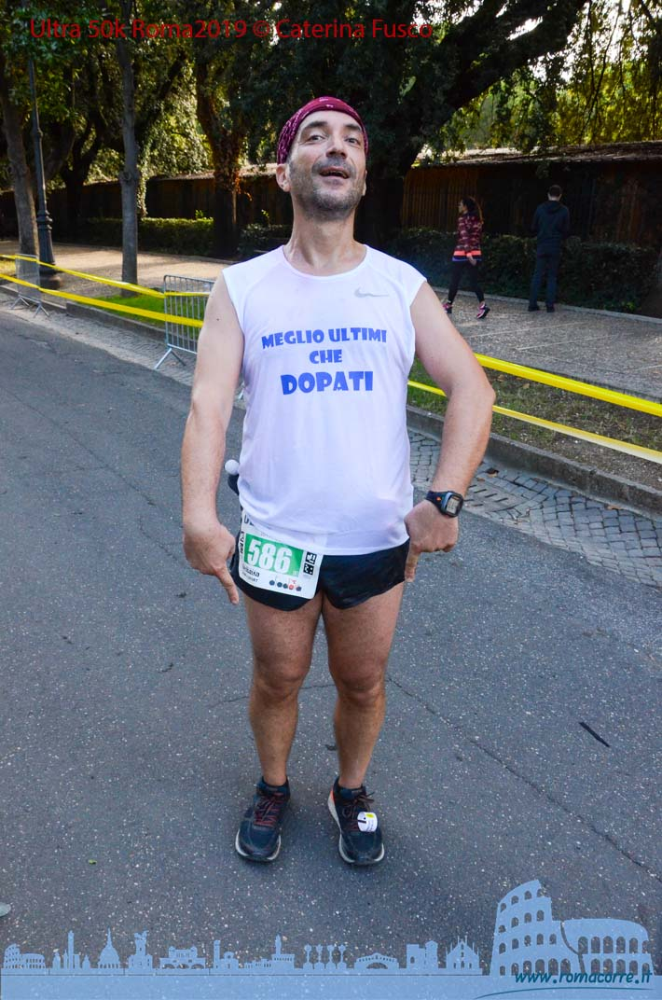

You are here:


|
IL DOWNLOAD GRATUITO DELLE FOTOGRAFIE E' CONSENTITO SOLO AD USO PERSONALE, OGNI ALTRO USO E' TUTELATO DA COPYRIGHT. ultimo servizio fotografico pubblicato:
|
||
|
GLI ALTRI SERVIZI FOTOGRAFICI LI TROVATE NELLE GALLERIE |
||
|
IL DOWNLOAD GRATUITO DELLE FOTOGRAFIE E' CONSENTITO SOLO AD USO PERSONALE, OGNI ALTRO USO E' TUTELATO DA COPYRIGHT. ultimo servizio fotografico pubblicato:
|
||
|
GLI ALTRI SERVIZI FOTOGRAFICI LI TROVATE NELLE GALLERIE |
||

Un altro paio di pagine strappate dal diario del podista. Ambientazioni consuete, tanto per andare sul sicuro.
1. Firenze (al netto dello sconto).
La si torna a correre sull’Arno. Questa volta con una inedita situazione climatica: non piove e non fa neppure freddo. Troppa fortuna non poteva restare impunita ed, infatti, complice una (sospetta) fuga di gas, giunti al Km 40, dopo 400 metri ecco il cartello successivo.
Più tardi si scoprirà di una decurtazione di 500 metri, bastevoli a far considerare dalla Fidal “non omologata” la distanza. Nonostante la fatica, quanti hanno ottenuto il personale, nel palmares, la maratona di Firenze 2019 non potrà essere annoverata.
Va bene. Ma che colpa ne abbiamo noi? Varrà il tempo dei 40 K?
Add a commentRicordate quando vi abbiamo parlato della West Brook University? Ora il Ministero dell'Istruzione interviene per chiarire una volta per tutte il valore di questo istituto e, soprattutto, dei titoli da esso rilasciati.
In Italia ci sono oltre 100mila fisioterapisti abusivi, si spacciano per professionisti titolati, ma non lo sono. Sono solo improvvisati dell'ultima ora.A Roma c'è chi vanta una "Laurea" in fisioterapia rilasciata da questo istituto ed esercita abusivamente la sua attività, in locali non autorizzati e, cosa più importante avendo già un impiego statale durante la mattina. Le autorità si stanno muovendo anche su nostra segnalazione, speriamo che riescano a mettere fine a queste attività illegali e abusive. E voi cari amici, informatevi sempre su coloro a cui vi rivolgete per curare i vostri infortuni, evitate chi fa anche altro nella vita, chi non vi rilascia fatture, chi vi riceve in locali che non si presentano come studi autorizzati. Vi siete mai chiesti come vi sentireste se durante una seduta arriva un controllo? Non alimentate questo sistema, solo per risparmiare qualche euro. La vostra salute vale di più.
Add a commentSe state cercando una scarpa “ pura” da strada, non potete non provare la Fli-Lyte 3 della Topo Atlhetic.
Noi l’abbiamo testata per voi. Fin da subito si percepisce il comfort della calzata, punto forte di tutta la linea Topo Athletic, la quale dona il giusto spazio sia alle dita che alla pianta del piede grazie anche alla soletta interna Otholite e una conchiglia più morbida nel retro piede.
Add a commentCon una recente sentenza (che potete leggere qui), il tribunale federale ha confermato che, nelle gare su strada, gli atleti possono correre con completino diverso da quello della società di appartenenza ( anche con quello di altra società?Questo non viene specificato nella sentenza che lascia, così, aperti scenari preoccupanti). Il caso vuole che proprio il presidente Minici, chiamato a difendersi davanti al giudice sportivo, per un presunto uso scorretto delle canotte sociali, nonostate sia stato assolto, lui ed il suo atleta, oggi minacci di squalifica un altro suo tesserato, reo secondo il presidente Minici, di aver corso con una maglietta a sostegno di una onlus, ovviamente diversa da quella della ASD di appartenza, la Piano ma arriviano. Si è arrivati addirittura alle minacce di squalifica. Caro presidente Minici, la Fidal TI ha detto che il tuo atleta Fagnani non ha commesso alcun illecito sportivo a correre in una gara con la canotta dei Purosangue e, allora, perchè prendersela tanto con Pietro? Questo caso ci offre ancora una volta uno spunto di riflessione sull'applicazione del regolamento Fidal: può un regolamento societario andare in deroga a quello federale?
Add a commentDi recente vi è una nuova attività che sta prendendo piede nel nostro mondo delle scarpette ai piedi. Le persone non riescono più a frenare il bisogno insopprimibile di farsi gli affari altrui e, soprattutto, metterci al corrente delle riflessioni in merito.
Si parte della maglietta, poi dalla forma fisica, finendo per commentare l’ansia di essere ever-present che contraddistingue questi nostri tempi di decadenza. Anche a me danno fastidio i ciccioni che, non so come, incrocio al decimo chilometro della maratona. Lo stesso dicasi per quanti vogliono per forza farci sapere quante maratone hanno disputato, oppure sono agghindati con le fogge più strane: dalla coniglietta (ehm ...), all’indiano (ciao, Angelo!), al Charlie Chaplin, all’antico romano, etc.
Add a commentNell'estate del 490 a.C, il re persiano Dario, desideroso di punire gli Ateniesi per avere aiutato gli Ioni a ribellarsi contro il suo potere, muove il proprio esercito verso la Grecia. Atene manda un messaggero veloce a chiedere aiuto agli Spartani, un emerodromo (letteralmente: "colui capace di correre per un giorno intero"). vi sono 250 km da Atene a Sparta e Fidippide, questo è il suo nome, li percorre a piedi, secondo Erodoto, in due notti e un giorno, ovvero 36 ore.
Add a comment18.a Garda Trentino Half Marathon quinta più partecipata d’Italia Battaglia tra connazionali: Tiongik su Kisorio, Heim su Gugglberger nel 21K Brasi miglior italiano della “mezza” - 10K a Vianney e Schiavi Rai Sport trasmetterà l’evento il 12 novembre alle ore 21:35 “Adoro questa gara, è la più bella che io abbia mai corso”, parole di Thea Heim, vincitrice (1h15’44”) del percorso 21K della Garda Trentino Half Marathon odierna a Riva del Garda, atleta che quest’anno pare abbia già affrontato di corsa un totale di 1000 chilometri in circa 67 ore, oltre 4.000 metri di dislivello e ben 61 gare. Un tempo Nietzsche, Kafka e i fratelli Mann ne erano assidui frequentatori, ma anche oggi lo scenario paesaggistico sul Garda Trentino era a dir poco incantevole, merito del sole spuntato solamente per la diciottesima edizione visto che (pare) da domani tornerà la pioggia, e ne hanno giovato innanzitutto i 5500 che si sono potuti godere i percorsi di 21K e 10K (partenza da Arco) della quinta mezza maratona più partecipata d’Italia.
Add a commentParma è stata una “scommessa” da Black Friday. Pagata un tozzo di pane, valeva proprio la pena andare a scoprire l’emozione della Food Valley, tra prosciutto (al netto degli scandali), parmigiano ed il culatello di Spigaroli dell’Antica Corte Pallavicini.
Per la verità non si inizia in stato di grazia. Non solo manca il Comandante ma le indicazioni su come raggiungere l’Expo scontano un elemento imprevisto: va raggiunta la sede del Comune, senza che sia specificato che trattasi di quella ‘storica’ e non di quella ‘moderna’. Dopo l’aggiunta di un chilometro, un gentile dipendente del Comune medesimo mi guida quasi verso la meta, con il guadagno di una visita “illustrata” alle bellezze della città.
Add a commentAlla 50 km di Roma abbiamo testato per voi le topo Athletic Phantom.
Sono sempre stato un pronatore, e non di poco. Pare che sia una caratteristica comune a tutti coloro che, come me, sono fatti a fisarmonica: prima magri, poi grassi, poi di nuovo magri, poi di nuovo grassi. Pertanto, quando mi è stato chiesto di testare queste scarpe, la prima cosa che ho chiesto è stata: sono per pronatori? Quando mi è stato risposto di no, avevo pertanto molti dubbi. Le ho provate in un paio di allenamenti, facendo attenzione ai messaggi a cui ormai sono abituato (ogni volta che ho preso delle scarpe sbagliate) da parte di ginocchio sinistro e polpaccio destro... Tutto ok. Allora facciamo sta follia e portiamole in gara alla 50 km di Roma.
Perfette.
Add a commentIl 12 ottobre verrà ricordato per sempre come il giorno in cui fu abbattuto il muro delle due ore. Sapete tutti di cosa parlo, no? Una fila di auto, su un percorso dritto come una freccia, precede il campione che tenterà la grande impresa. Cruise control e laser a Luce verde proiettata a terra, un gruppo di lepri si alterna, disponendosi in maniera molto coreografica e piuttosto aereodinamica intorno a Kipchoge. Niente è stato lasciato al caso, anche i colori con cui sono abbigliati sono stati scelti con parcelle da migliaia di dollari. Intorno, due ali di folla, festanti. È così che muore l’atletica: tra scroscianti applausi, e sotto una pioggia di soldi.
Add a commentPubblicizza su romacorre.it la tua gara
Contatta la
Questo indirizzo email è protetto dagli spambots. E' necessario abilitare JavaScript per vederlo.